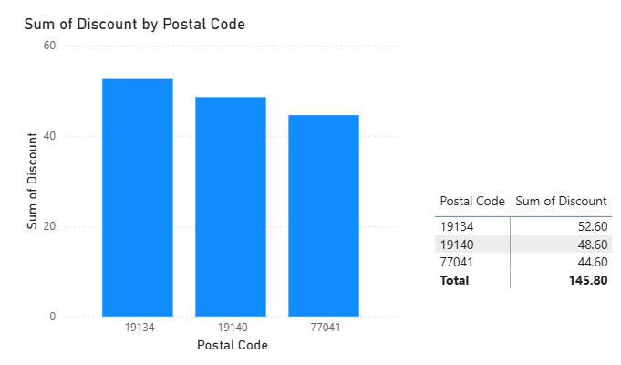
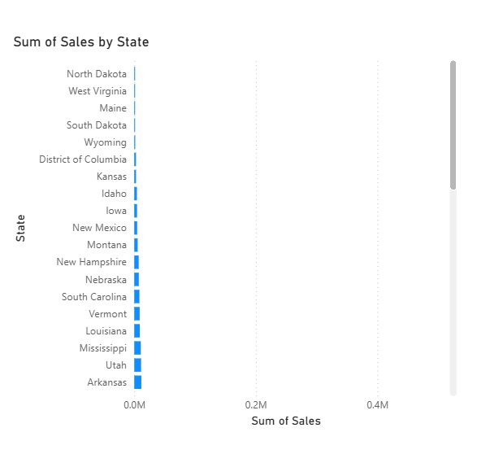
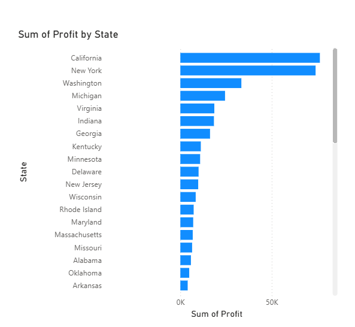
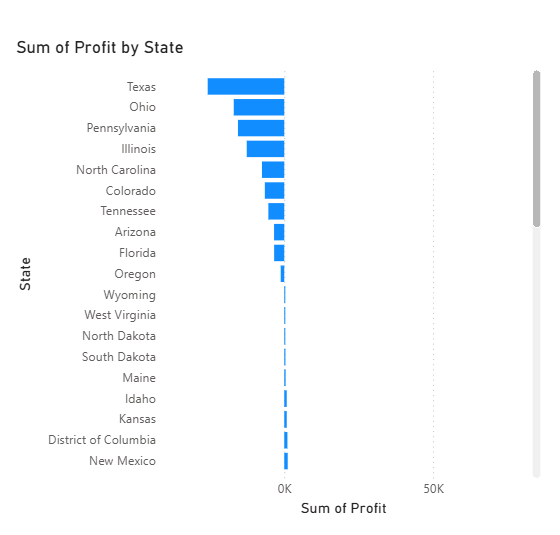
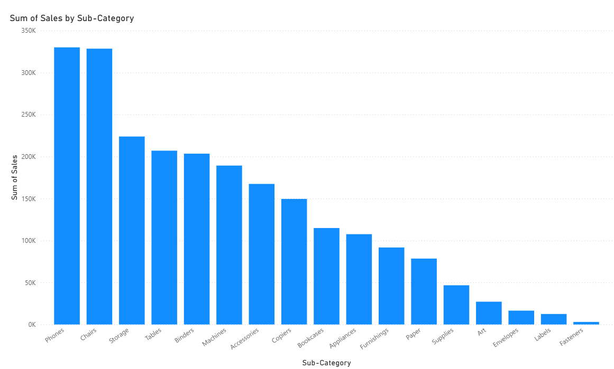

PROJECT OVERVIEW
基于零售业务数据完成可视化分析，从州、产品、客户、城市与品类等多个维度识别销售和利润表现，展示数据筛选、Top N、矩阵、卡片与图表表达能力。
PROJECT TYPEData Analytics
CORE TOOLS / METHODSPower BI · Data Visualization · Business Insights
PORTFOLIO PURPOSE用于校招展示项目方法、工具与业务理解能力
MY CONTRIBUTION
我做了什么
- 独立完成 Power BI 可视化分析任务
- 围绕 Sales、Profit、Quantity 等指标进行多维分析
- 使用 Top N、矩阵、卡片、条形图等方式回答业务问题
- 将可视化结果转化为可读的业务观察与结论






What this proves
这个项目最直接证明了我将原始业务问题转化为可视化分析结果的能力，适合用于数据分析、商业分析与经营分析岗位展示。